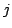
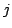

With the above, we can now assemble the matrix for the elastic equation in mostly the same way as before. The difference is that for each shape function, we have to loop over all components. The code then looks like this (compare this with the one in Section 5.1):
for (unsigned int i=0; i<fe.dofs_per_cell; ++i)
for (unsigned int comp_i=0; comp_i<fe.n_components(); ++comp_i)
for (unsigned int j=0; j<fe.dofs_per_cell; ++j)
for (unsigned int comp_j=0; comp_j<fe.n_components(); ++comp_j)
for (unsigned int q=0; q<n_q_points; ++q)
{
// first assemble part with lambda+mu
cell_matrix(i,j)
+= ((lambda+mu) *
fe_values.shape_grad_component(i,q,comp_i)[comp_i] *
fe_values.shape_grad_component(j,q,comp_j)[comp_j] *
fe_values.JxW(q));
// then part with mu only
if (comp_i == comp_j)
cell_matrix(i,j)
+= (mu *
(fe_values.shape_grad_component(i,q,comp_i) *
fe_values.shape_grad_component(j,q,comp_j) )*
fe_values.JxW(q));
};
If you dislike this particular order of the loops, you can reorder them as you
like, as they are independent.
The code as shown above can be optimized. For example, instead of
unconditionally performing the loop over all components of shape functions  of , we might first ask whether these shape functions are primitive, using
fe.is_primitive(i), and use the loop only if the result is false;
if, on the other hand, the result is true, we only need to set
comp_i to the fixed value
fe.system_to_component_index(i).first, and likewise for shape
function .
of , we might first ask whether these shape functions are primitive, using
fe.is_primitive(i), and use the loop only if the result is false;
if, on the other hand, the result is true, we only need to set
comp_i to the fixed value
fe.system_to_component_index(i).first, and likewise for shape
function .
Another possibility for optimization would be to ask whether a certain component over which we loop is actually non-zero, or if the shape function is a non-primitive one but happens to be zero in the present component nevertheless. For this, we could replace the loop over comp_i by this:
for (unsigned int comp_i=0; comp_i<fe.n_components(); ++comp_i)
if (fe.get_nonzero_components(i)[comp_i] == true)
If the if-clause does not succeed then this component of the shape function is
definitely zero, and there will not be a contribution to the matrix anyway, so
we can also skip the computations.